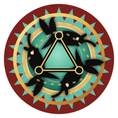
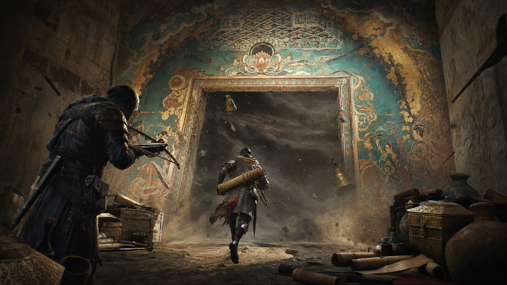
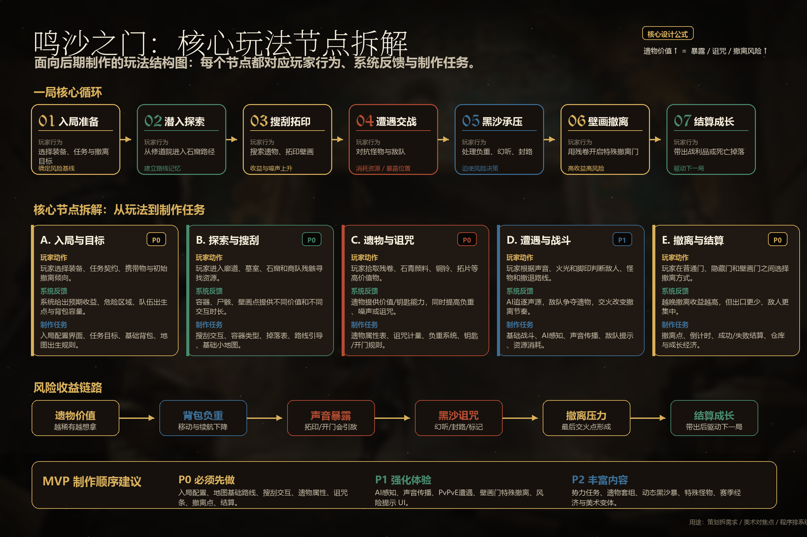
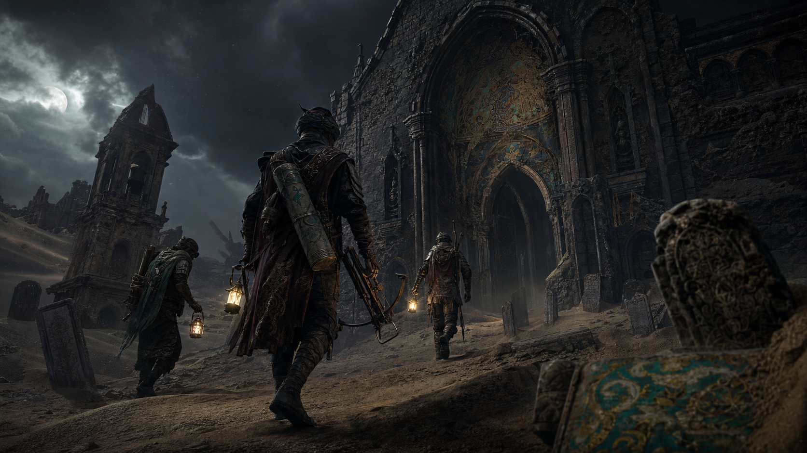
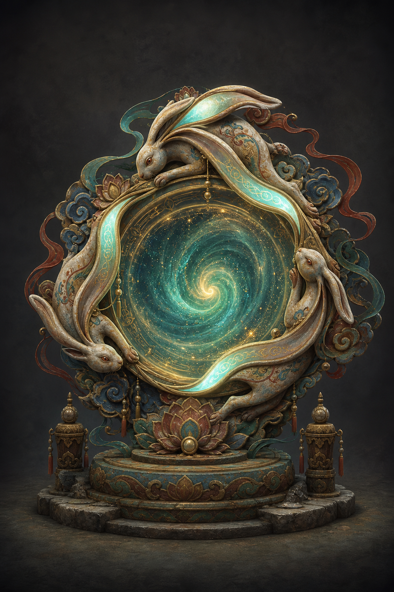
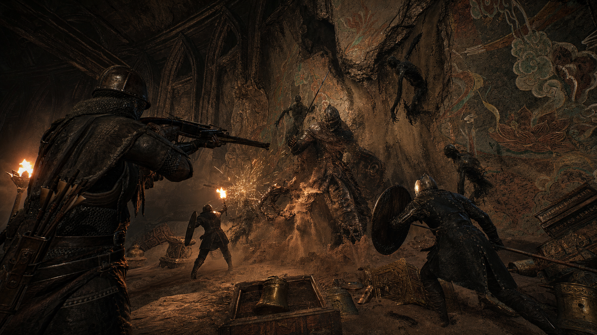
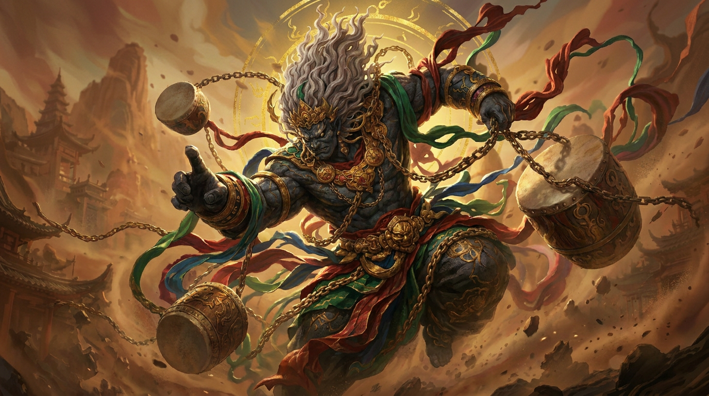
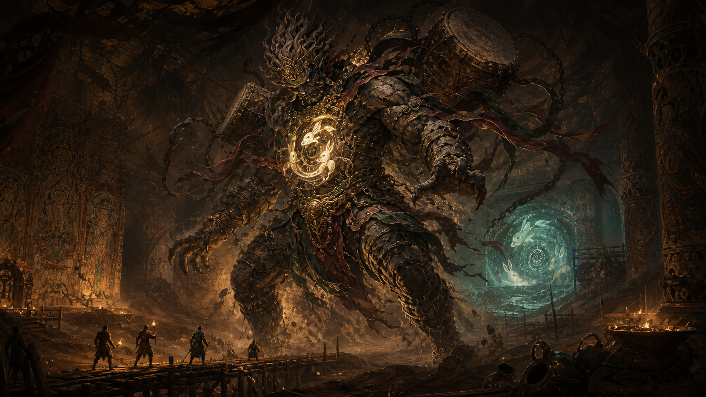
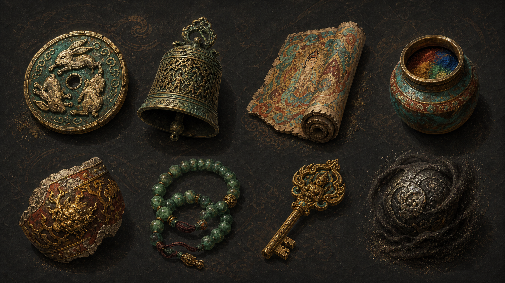
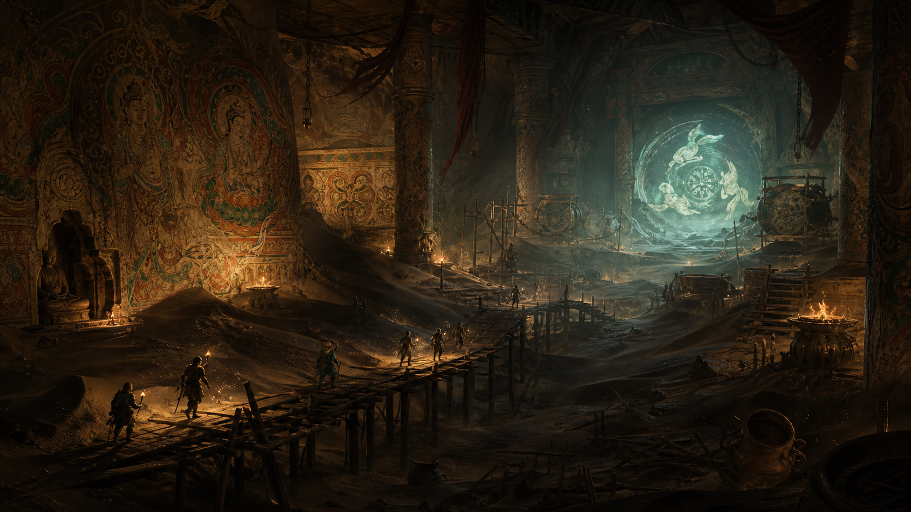

听声找价值
铜铃、风沙、壁面回响和怪物噪音构成可学习的声音地图。

鸣沙之门
敦煌幻想 · 丝路三兔 · 听声搜打撤
三人小队潜入被黑沙吞没的壁画遗址，依靠声音辨位寻找遗物、规避诅咒、击破雷鼓窗口，最终在三兔共耳纹样开启的壁画门前完成撤离。
Game Pitch
玩家不需要理解复杂职业协作，只要在一局内完成三件事：听出价值的位置，判断该拿多少，带着队友从门里撤出去。雷神、黑沙、三兔共耳和壁画宝物都服务于这个闭环。
铜铃、风沙、壁面回响和怪物噪音构成可学习的声音地图。
宝物越稀有，负重、暴露声和黑沙诅咒越高。
雷鼓打断怪物节奏，三段共鸣提示三人开门、守门与撤离。
Playable Loop
选路线、带工具、确认门区目标。
用声纹判断遗物、敌人和兔耳印方向。
稀有宝物提高收益，也提高负重与暴露。
击鼓破盾，抢出短窗口推进或撤退。
三段共鸣提示开门、守门、全员撤离。
带出宝物，解锁壁画线索和下一层风险。
玩家用声音脉冲判断风险，不依赖大量 UI 提示。
拿得越多越值钱，也越重、越响、越容易被追上。
三人不绑定职业，默认形成听声标记、搜物搬运、雷鼓守门三种临场职责。
Core Node Breakdown
最新方案将复杂协作收束为“听声找路、搜物取舍、雷鼓抢节奏、三兔门撤离”。三人小队不用记职业规则，只需要围绕声音、负重和门区倒计时做团队决策。

玩家选择路线、背包容量、初始工具和撤离目标。系统给出本局危险区、出生点、门区条件和预期收益。
玩家释放短促听声脉冲，根据铜铃、壁面回响、沙噪和脚步声标记方向，形成三人共享路线。
玩家拾取壁画残卷、雷鼓碎片、颜料罐和兔耳印。越稀有越值钱，也越重、越响、越容易引发黑沙诅咒。
雷神的鼓点不再做复杂四神协作，而是转为全队可理解的节奏窗口：击鼓破盾，争取推进、救援或撤退的几秒机会。
兔耳印唤醒壁画门，门区出现三段共鸣。第一段开门，第二段守门，第三段撤离，三人围绕倒计时自然分工。
带出的宝物进入仓库，壁画线索推进章节，黑沙风险在下一局升级，形成“再下一层”的驱动力。

World & Motif
敦煌三兔共耳与欧亚多地三兔纹样共享“追逐成环、三耳成三角”的图像结构。游戏中，这个纹样不以说明牌出现，而是被转译为壁画门、兔耳印、声音共鸣和宝物图案：玩家看到它，就知道这里牵连着方向、循环和撤离时机。
天顶纹样记录三兔旋转，像一扇向上的门。
图像穿过商路和宗教空间，留下不同地域的变体。
遗址中的纹样被雷鼓唤醒，成为门区共鸣机关。
High Resolution Art
最适合作为宣传页主视觉：壁画、风沙、门区和玩家行动目标同时出现。

三只玉兔围绕星旋构成门体，承担终局撤离、深层入口和宣传识别。
小队从外部黑沙遗址进入洞窟，建立探索前的压迫感。

黑沙怪物从壁面与地面中剥离，适合表现 PvE 高压节点。

风雨雷电四神之一，负责雷鼓、节奏窗口和门区压迫。

壁画石、铜面具和兔耳印构成门区守卫。

铜铃、壁画残卷、颜料罐、雷鼓碎片和黑沙遗物。

用于关卡入口、官网背景和门区空间气氛。
Video Showcase
三条视频分别服务宣传、评审和制作沟通：第一条展示三人小队可落地玩法闭环，第二条强调听声判断，第三条帮助团队理解制作节点。